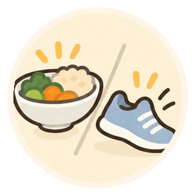
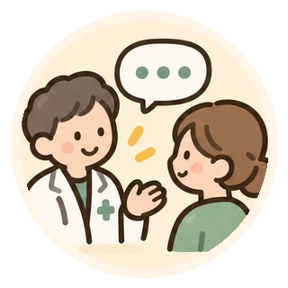
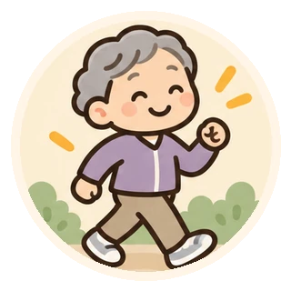
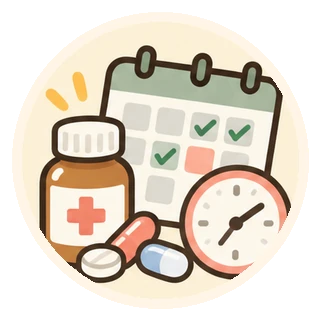

知りたいことから、ミライラボへ。
コンテンツ一覧
薬のこと、健康のこと、毎日の暮らし。
年齢に関係なく、気になるテーマを選んでください。
-
薬・市販薬・サプリメント
薬の基本から、飲み方、市販薬の選び方、サプリメントの注意点まで。
内容を見る -

子どものお薬
薬の飲ませ方・使い方と、飲めないときや困ったときの工夫。
内容を見る -
医薬品の安全性
副作用、健康食品、治療法を選ぶときに確かめたいこと。
内容を見る -
健康診断
健診の目的、受ける前の準備、検査の意味、結果を受け取った後のこと。
内容を見る -

病気と治療
高血圧、糖尿病、脂質異常症、心房細動など、病気と治療の目的。
内容を見る -
予防接種・ワクチン
予防接種の対象や時期、接種を受ける前後に知っておきたいこと。
内容を見る -
感染症
身近な感染症の症状と予防、受診や学校・園に戻る目安。
内容を見る -
健康習慣と薬
食事・運動・睡眠と薬の関係を、暮らしの中から考える。
内容を見る -
からだ・こころ・デジタルとの付き合い方
体や心の変化、性の健康、歯と口、スマホやSNSについて。
内容を見る -

毎日の健康と、これからの暮らし
食べる、歩く、眠る、人とつながる。好きなことを続けるための工夫。
内容を見る -

家族の健康・介護
家族の薬や体調の変化、介護の相談先、支える人自身の健康。
内容を見る -

体の気になることを調べる
暮らしで気づく体の変化と、受診や相談の準備について。
内容を見る
知りたいことが決まっているときは
言葉を入力したり、よくある質問から探したりできます。